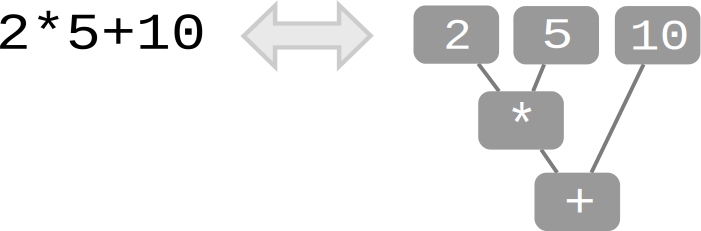
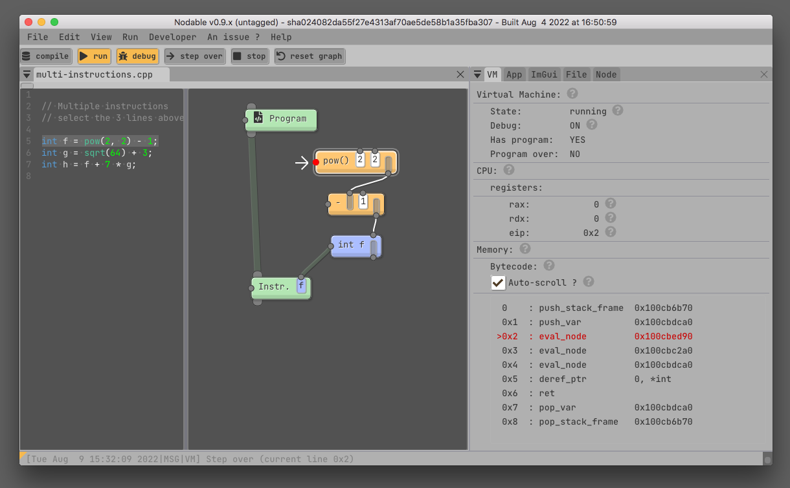
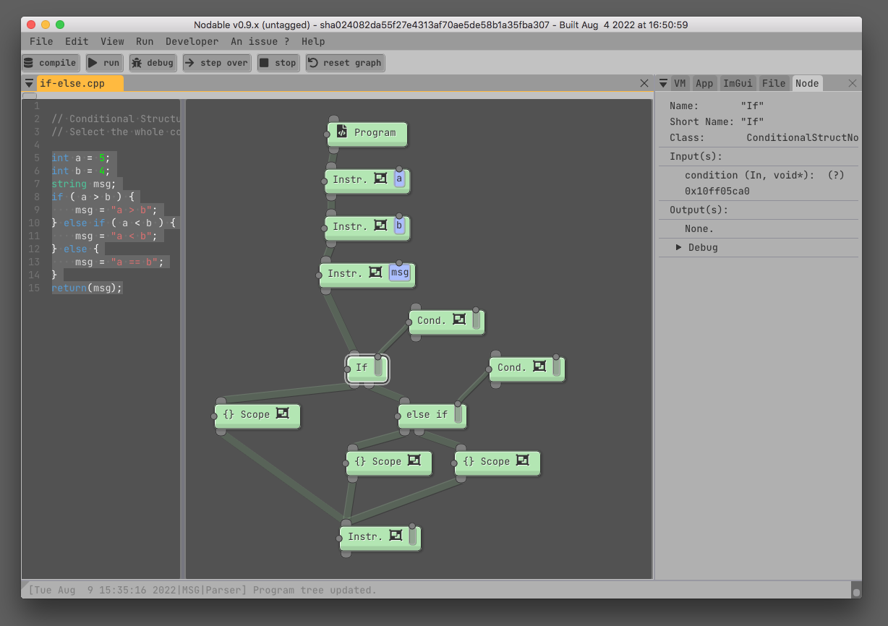
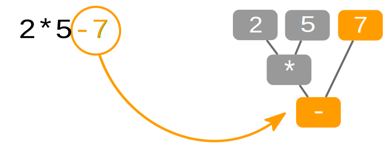
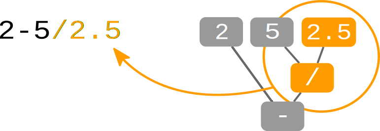

disclaimer: this website is still work in progress.
What is Nodable?
Nodable is node-able. The goal of Nodable is to provide an original hybrid source code editor, using both textual and nodal paradigms.
In Nodable, the two point of views bellow are equivalents. The software is able to generate a graph from the code and the code from a graph.
Downloads
- Nodable v0.9.6 (Win, Mac, and Linux)
- Nodable sources (CMake 3.14+, C++11)
- Nodable older versions
Screenshots

Code, graph, and pseudo-assembly code.

Conditional structures.
The concept
In Nodable, the two point of views bellow are equivalents. The software is able to generate a graph from the code and the code from a graph.
Any changes to the code will update the graph.
Any changes to the graph will update the code.
There is no magic, the source code stays the source code. The graph is always generated on the fly.